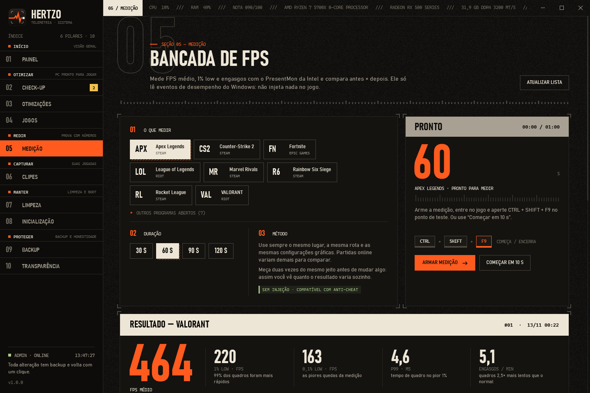

APC pronto para jogar
Otimizar
- Check-up com peso real: monitor a 60 Hz, RAM sem XMP, canal único
- 25 ajustes com impacto, risco e evidência
- Perfis por jogo: GPU dedicada, tela cheia, prioridade
O otimizador para jogos que não promete FPS. Ele mostra a prova.
Ajustes reversíveis com nível de evidência, medição de FPS com o PresentMon da Intel e replay de clipes no encoder da placa. Sem telemetria, sem conta, sem internet.
O Hertzo não é uma lista de tweaks. Ele deixa o PC pronto, prova o resultado, grava suas jogadas, mantém tudo limpo e protege cada alteração.
Duas medições iguais já variam alguns por cento sozinhas. O Hertzo sabe disso e marca como ruído o que não passa da variação normal.

VALORANT · Ryzen 7 5700X · RX 580 · 120 s
Usa o PresentMon da Intel, que só lê os eventos de quadros que o Windows publica. Nada é injetado no jogo, então funciona com Vanguard, VAC, EAC e BattlEye.
REAL diferença acima da variação normal RUÍDO ±3% no médio · ±6% no 1% low · ±10% no 0,1% low
Se um otimizador não mostra o que muda e não deixa desfazer, ele está pedindo confiança cega.
| Otimizadores comuns | Hertzo |
|---|---|
| “+50% de FPS” sem medir nada | Mede antes e depois e diz se a diferença é real |
| Dezenas de tweaks copiados de fórum | Cada ajuste com fonte e rótulo de evidência; os fracos nunca entram no “Otimizar agora” |
| Desligam Defender, Firewall e Windows Update | Nunca mexe em proteção, anti-cheat, bcdedit ou mitigações de CPU |
| Difícil ou impossível de desfazer | Backup de cada valor original e “Desfazer tudo”, mesmo depois de reiniciar |
| Telemetria, anúncios, assinatura | Open source (MIT), sem conta, sem internet |
Preto quente, osso e um único laranja de sinal. Tipografia de instrumento, marcas de corte e nada de neon. Clique para ampliar.
Rodar como administrador é responsabilidade. Estas linhas o Hertzo não cruza, e o código está aberto para você conferir.
Quase não pesam em jogo e são sua principal proteção.
Nada é injetado. Só configurações oficiais do Windows.
Costuma piorar a latência em CPUs modernas.
Ganho mínimo em jogos, brecha de segurança real.
Quebra Game Pass, atualizações e alguns jogos.
O Hertzo não se conecta a nada. Links só abrem quando você clica.
%ProgramData%\Hertzo não aceita escrita de programas sem admin. Nada plantado lá é usado.
O backup só restaura valores que aquele ajuste realmente altera. Um diário adulterado não escreve em outro lugar.
O caminho real de cada arquivo é conferido no momento de apagar. Nada fora da pasta alvo é apagado.
O Hertzo não injeta nada nem lê a memória dos jogos: só usa configurações oficiais do Windows. A medição lê eventos que o próprio Windows publica e os clipes usam a mesma API de captura do OBS. Funciona com Vanguard, VAC, EAC e BattlEye. Ainda assim, nenhum programa de terceiros pode garantir isso por um anti-cheat.
Depende do PC, e por isso o Hertzo mede em vez de prometer. Os ganhos grandes vêm de problemas reais que o Check-up encontra: monitor a 60 Hz em vez de 144, RAM sem XMP, plano de energia Equilibrado. Em um PC já bem configurado, a diferença costuma ser pequena, e a Medição mostra isso.
O executável não tem uma assinatura digital paga, então o SmartScreen mostra “aplicativo não reconhecido”. Clique em “Mais informações › Executar assim mesmo”, confira o SHA-256 publicado na release ou compile a partir do código.
A codificação roda no chip de vídeo dedicado da placa. No teste (RX 580, 1080p60) o processo usou 1–2% da CPU. Meça o seu caso: Medição com o replay ligado e desligado.
Backup › Desfazer tudo. Cada configuração volta ao valor exato de antes, mesmo depois de reiniciar. Também há o ponto de restauração do Windows criado antes de otimizar.
Um arquivo, sem instalador. Abra, rode o Check-up e meça seu jogo antes de mudar qualquer coisa.
Windows 10 21H2+ / 11 · x64 · ~67 MB · licença MIT